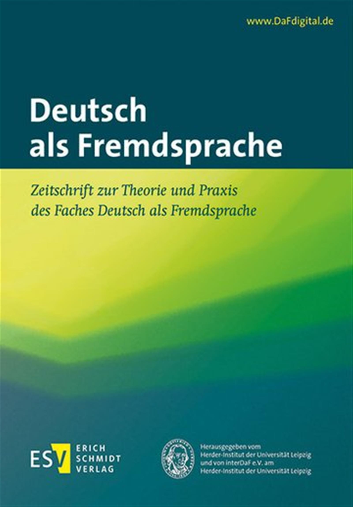

| Autor (Jahr) | Autor (Jahr) | Autor (Jahr) | |
|---|---|---|---|
| #1 Was ist das Thema der Studie? | |||
| #2 Was ist das Ziel der Studie? | |||
| #3 Was hat die Studie getan, um ihr Ziel zu erreichen? | |||
| #4 Was hat die Studie dabei erreicht? | |||
| #5 Welche Relevanz hat das Erreichte über die Studie hinaus? |
1 Abstracts
Was ist und was tut ein Abstract
Jeder wissenschaftliche Aufsatz beginnt mit einem Abstract. Ein Abstract ist eine Art von Zusammenfassung, erfüllt aber noch andere Funktionen. Das Abstract ist (zusammen mit dem Titel) meist der erste Teil der Arbeit, den der Leser liest. Dieser Moment ist entscheidend. Das Abstract muss zum Weiterlesen motivieren. Ein Abstract muss außerdem Orientierung für die Lektüre bieten und eine Art Wegbeschreibung
durch den folgenden Aufsatz enthalten. Und zu guter Letzt können Autoren im Abstract hervorheben, was ihnen an ihrer Arbeit am wichtigsten erscheint. Das Abstract muss also mehrere Funktionen auf einmal erfüllen (die Arbeit zusammenfassen, zum Weiterlesen motivieren, eine Wegbeschreibung sein, Wichtiges hervorheben, Swales und Feak 2009, 2). Entsprechend schwierig ist ein Abstract zu schreiben.
In diesem Kapitel lernen Sie, wie Ihnen ein gutes Abstract gelingt. Am Ende dieses Kapitels können Sie
- ein effektives Abstract nach kommunikativen Moves aufbauen.
- idiomatische Formulierungen funktionsorientiert und effizient nutzen.
Vor dem Schreiben, lesen
Im Folgenden sind einige Beispiele für Abstracts abgedruckt. Anhand der Beispiele können Sie sich einen ersten Eindruck von der Textsorte verschaffen. Die Abstracts gehören zu Aufsätzen aus verschiedenen germanistischen Fachzeitschriften.
Übungsaufgabe 1.1 Bevor Sie mit dem Lesen beginnen, sehen Sie sich die Zeitschriftencover und Quellenangaben genauer an. Vermuten Sie, welche Themen Sie in dieser Zeitschrift und in diesem Aufsatz erwarten. Notieren Sie Ihre Erwartungen und Vermutungen stichpunktartig daneben. Wie finden Sie die Aufsatztitel?
 |
Niehr, Thomas. 2019. „Sprache – Macht – Gewalt oder: Wie man die Grenzen des Sagbaren verschiebt“. Deutsche Sprache 47 (4): 363–72. |  | Bärenfänger, Olaf. 2018. „Deutsch im Studium: Welche studiersprachlichen Kompetenzen benötigen Studienanfänger?“ Deutsch als Fremdsprache 55 (4): 207–16. |  |
Krekeler, Christian. 2020. „Schreiben im Studium: Eine korpuslinguistische Untersuchung zum Sprachgebrauch in den Studiengängen Maschinenbau und Betriebswirtschaft“. Zeitschrift für Interkulturellen Fremdsprachenunterricht 25 (2): 207–35. |
Übungsaufgabe 1.2 Lesen Sie jetzt die Abstracts einmal durch. Ergänzen Sie die Quellenangaben. Markieren Sie in jedem Text den Satz, der Ihrer Meinung nach am wichtigsten ist.
Drei Beispiele für Abstracts
Im öffentlichen Diskurs der Bundesrepublik Deutschland wird vermehrt auch wieder über Sprache diskutiert. Während in den vergangenen Jahrzehnten beispielsweise über den Gebrauch von Fremdwörtern oder über die Orthographiereform gestritten wurde, stehen momentan Themen wie gendergerechter Sprachgebrauch und die Sprache von Rechtspopulisten auf der Agenda. Der folgende Beitrag geht der Frage nach, auf welche Weise es Rechtspopulisten gelingt, die Grenzen des Sagbaren zu verschieben, um auf diese Weise, ihre diskursive Machtposition zu festigen und zu erweitern. Anhand ausgewählter Beispiele wird gezeigt, wie durch wiederholte Tabubrüche und anschließende scheinbare Entschuldigungen ein Kommunikationsmuster etabliert wird, das dazu dient, große öffentliche Aufmerksamkeit zu erhalten und sich gleichzeitig der Zustimmung politisch extrem rechts stehender Kreise zu vergewissern.
Sollte das wissenschaftliche Schreiben als allgemeine Wissenschaftssprache vermittelt werden oder sollten die sprachlichen Anforderungen in den jeweiligen Disziplinen berücksichtigt werden? Die Antwort auf diese Frage hängt auch davon ab, wie stark sich die Wissenschaftssprachen unterscheiden. In der vorliegenden Studie wurden wissenschaftssprachliche Besonderheiten anhand zweier Korpora untersucht, die deutschsprachige Dissertationen der Fächer Betriebswirtschaftslehre (BWL) bzw. Maschinenbau (MB) umfassten und in denen der Gebrauch von Mehrworteinheiten (z.B. im vergleich zu den) verglichen wurde. Die Untersuchung verdeutlicht den unterschiedlichen Gebrauch der Mehrworteinheiten zwischen den Disziplinen: Nur vierzehn der 50 häufigsten Mehrworteinheiten wurden in beiden Korpora genutzt. Die Ergebnisse werden mit Blick auf die Vermittlung des wissenschaftlichen Schreibens erörtert. Es werden Überlegungen zur Weiterentwicklung der Methode angestellt und es wird diskutiert, wie die Korpuslinguistik die Schreibvermittlung im Studium unterstützen könnte.
Aktuelle Statistiken zeigen, dass große Anteile von Studierenden mit einer anderen Muttersprache als Deutsch ihr Studium abbrechen. Ein bedeutender, wenn auch zweifellos nicht der einzige Grund hierfür ist in zu gering ausgeprägten studiersprachlichen Kompetenzen zu sehen. Vor diesem Hintergrund erhebt sich die Frage, welche sprachlichen Anforderungen an Studierende ein Studium an einer deutschen Hochschule stellt. Obwohl die Beantwortung dieser Frage insbesondere für die Konzeption und Durchführung von Maßnahmen zur sprachlichen Förderung und damit zur Erhöhung des Studienerfolgs zentral erscheint, liegen diesbezüglich von Seiten der Forschung bislang nur lückenhafte Erkenntnisse vor. Der vorliegende Artikel stellt angesichts dieser Situation eine mehrmethodische qualitative Untersuchung vor mit der Intention, die sprachlichen Anforderungen an Studierende in den ersten vier Semestern zu beschreiben. Dieses Unterfangen wurde exemplarisch anhand der drei Fächer Chemie, Medizin und Wirtschaftswissenschaften umgesetzt. Im Anschluss an die Darstellung zentraler Ergebnisse werden mögliche Konsequenzen für weitere Forschung sowie für studienvorbereitende und studienbegleitende Maßnahmen diskutiert.
Übungsaufgabe 1.3 Vergleichen Sie den Titel der Aufsätze mit dem markierten Kernsatz im Abstract. Diskutieren Sie, ob Titel und Kernsatz zusammenpassen. Diskutieren Sie außerdem, ob die erwähnten Funktionen eines Abstracts erfüllt sind (die Arbeit zusammenfassen, zum Weiterlesen motivieren, eine Wegbeschreibung sein, Wichtiges hervorheben).
Übungsaufgabe 1.4 Jedes Abstract sollte fünf wichtige Kernfragen beantworten. Lesen Sie die Abstracts noch einmal genauer und notieren Sie hier Antworten auf die folgenden fünf Kernfragen. Wenn Sie keine Antwort finden, notieren Sie nichts.
Antworten auf Kernfragen
Der Aufbau von Abstracts ist gut untersucht (Santos 1996; Hyland 2000, 63–84; Swales und Feak 2009). Hiernach bestehen Abstracts aus sogenannten Moves (‘Schritte, Züge, Bewegungen’). Ein Move ist keine grammatische Einheit wie etwa ein Satz, sondern ein Textteil unbestimmter Länge, der eine der erwähnten Kernfragen beantwortet. In Tabelle 1.1 werden die fünf typischen Moves zusammengefasst.
| Move | beantwortet ... | beschreibt ... |
|---|---|---|
| #1 | Was ist das Thema der Studie? | Hintergrund / Situation / Debatte |
| #2 | Was ist das Ziel der Studie? | Forschungsfrage / Ziel der Arbeit |
| #3 | Was hat die Studie getan, um ihr Ziel zu erreichen? | Untersuchungsmethode |
| #4 | Was hat die Studie dabei erreicht? | Ergebnisse / Argumente / Erkenntnisse / Interpretationen |
| #5 | Welche Relevanz hat das Erreichte über die Studie hinaus? | Fazit / Implikationen / Empfehlungen |
Übungsaufgabe 1.5 Markieren Sie die Moves in den Abstracts. Nutzen Sie hierfür entsprechende Labels und verschiedene Farben (M#1, M#2, M#3, M#4, M#5). Vergleichen Sie dann die Beispiele miteinander. Welche Moves werden in allen Beispielen gemacht, welche nicht? In welcher Reihenfolge kommen die Moves vor?
Make a Move - Zeit zum Schreiben
Jetzt sind endlich Sie an der Reihe, ein Abstract zu schreiben. Das Abstract ist normalerweise der letzte Teil, den ein Autor schreibt, wenn alles andere schon geschafft ist. Sie können ein Abstract aber auch ganz am Anfang schreiben, um sich zu orientieren und ihren Gedankengang zu ordnen.
Einen Plot entwickeln
Wie jeder Roman braucht auch eine wissenschaftliche Arbeit einen Plot, der sich durch den Text zieht und der die verschiedenen Teile der Arbeit miteinander verknüpft. Für eine erste Skizze muss der Plot noch nicht in allen Details ausgearbeitet sein. Ein paar gut durchdachte Antworten auf einige zentrale Fragen genügen.
Übungsaufgabe 1.6 Beantworten Sie folgende W-Fragen möglichst genau, indem Sie die Antwortfragmente vervollständigen.
Plot meiner Arbeit
Was will ich herausfinden? Ich will herausfinden, ob / wie / welche / wieso …
Wie komme ich auf diese Idee? Ich bin auf diese Idee gekommen, als / während / weil …
Wie will ich das herausfinden? Um das herauszufinden, werde ich …
Was werde ich dabei wahrscheinlich entdecken? Ich vermute, dass …
Wieso will ich das herausfinden? Ich will das herausfinden, weil …
Übungsaufgabe 1.7 Formulieren Sie auf der Grundlage Ihrer Antworten in Übungsaufgabe 1.6 einen ersten Entwurf, der Ihr Forschungsvorhaben in einfachen Worten beschreibt. Schreiben Sie ganz intuitiv und spontan. Grammatik und Stil sind jetzt noch nicht so wichtig.
Mein Entwurf für ein Abstract
Wenn Ihnen auch nach längerem Nachdenken nichts einfällt, finden Sie hier ein Beispiel, mit dem Sie weiterarbeiten können.
Keep Moving - Den ersten Entwurf überarbeiten
Der erste Entwurf ist zu Papier gebracht. Gut gemacht, aber Sie sind noch lange nicht am Ende. Weiter geht’s! Die folgenden Schreibaufgaben helfen Ihnen dabei, Ihren Text zu überarbeiten und nachzubessern. Sie nutzen dabei die Beispielabstracts immer wieder als Modelle für eigene Formulierungen. Außerdem arbeiten Sie mit ausgewählten Auszügen aus einer Textsammlung von 1591 Abstracts1, die Sie mit einem Interface durchsuchen können.
Einstieg und Move #1
Der erste Satz ist oft der schwierigste. Wie schön wäre es, könnte der Text stattdessen mit dem zweiten Satz beginnen! Swales und Feak (2009) haben vier Arten von Anfängen herausgearbeitet, die in Tabelle 1.2 zusammengefasst sind.
| Typ | Erster Satz beschreibt... | Beispiel |
|---|---|---|
| A | Reale Gegebenheit oder übliche Praxis | ... |
| B | Forschungsfrage oder -absicht | ... |
| C | Untersuchungsmethode | ... |
| D | Problem oder Ungewissheit | ... |
Übungsaufgabe 1.8 Ordnen Sie den jeweils ersten Satz der Beispielabstracts in Tabelle 1.2 ein.
Übungsaufgabe 1.9 Durchsuchen Sie die folgenden Auszüge aus der Textsammlung nach typischen Anfängen. Notieren Sie ein Beispiel jeder Art in Tabelle 1.2.
Übungsaufgabe 1.10 Ein beliebter Einstieg in Abstracts ist auch Move #1, der den Hintergrund der Studie beschreibt. Suchen Sie in den Beispielabstracts nach dem Ausdruck Hintergrund und unterstreichen Sie den Ausdruck und seinen näheren Kontext. Notieren Sie Ihre Ergebnisse hier.
Move #1
Übungsaufgabe 1.11 Durchsuchen Sie jetzt die folgenden Auszüge nach dem Wort Hintergrund. Geben Sie hierfür Hintergrund als Zielwort ein. Durchsuchen Sie die angezeigten Belege nach Mustern, indem Sie die linken und rechten Kontexte ordnen und filtern. Geben Sie z.B. in die linke Kontext-Suche vor dem ein und ordnen Sie den rechten Kontext alphabetisch, indem Sie auf einen der kleinen Pfeile klicken. Welches Muster zeigt sich? Notieren Sie die Ergebnisse Ihrer Suche im Kasten.
Übungsaufgabe 1.12 Häufig enthält Move #1 auch folgende Ausdrücke: Grundlage, Annahme und Zusammenhang. Durchsuchen Sie die Auszüge nach Beispielen für Move #1 mit diesen Ausdrücken. Gehen Sie bei der Suche wie bei Hintergrund vor und notieren Sie gefundene Muster im Kasten.
Übungsaufgabe 1.13 Formulieren Sie jetzt den Move #1 Ihres eigenen Abstracts. Verbessern Sie Ihren Entwurf oder formulieren Sie den Einstieg als Move #1 dort noch einmal. Schreiben Sie nicht mehr als zwei Sätze.
Move #2
Die Forschungsfrage ist das Herz jeder wissenschaftlichen Arbeit. Sie sollte im Abstract daher ausdrücklich und für den Leser gut erkennbar formuliert werden. Das ist die Aufgabe von Move #2. Was ist das Ziel dieser Arbeit? Was ist das Anliegen dieser Studie? Was will dieser Beitrag dem Leser zeigen? Move #2 muss Antworten auf diese Fragen geben.
Übungsaufgabe 1.14 Suchen Sie in den Beispielabstracts nach Formulierungen, die Move #2 einführen. Oft enthalten solche Formulierungen metadiskursive Ausdrücke, d.h. Ausdrücke, die sich auf die Arbeit selbst beziehen (z.B. Studie, Artikel). Unterstreichen Sie die gefundenen Ausdrücke und ihren näheren Kontext und notieren Sie die Ausdrücke hier.
Move #2
Übungsaufgabe 1.15 Durchsuchen Sie jetzt die Auszüge aus der Textsammlung nach Studie, Artikel und ähnlichen Wörtern. Vergleichen Sie die Belege bestimmter Zielwörter miteinander. Welche Gemeinsamkeiten können Sie links und rechts der Zielwörter entdecken? Achten Sie vor allem auf Verben, die das Anliegen der Arbeit beschreiben. Notieren Sie häufige Muster im Kasten.
Übungsaufgabe 1.16 In Move #2 wird die Forschungsfrage eingeführt. Wie wird das gemacht? Ordnen und durchsuchen Sie in den folgenden Auszügen den rechten Kontext von Frage und notieren Sie häufige Wörter und Phrasen (z.B. wird der Frage nachgegangen, ob).
Übungsaufgabe 1.17 Formulieren Sie jetzt Move #2 für Ihr eigenes Abstracts. Schreiben Sie einen einzigen, etwas längeren Satz, der eindeutig als Move #2 erkennbar ist und der Ihre Forschungsfrage enthält. Verbessern Sie hierfür Ihren Entwurf oder formulieren sie dort neu.
Move #3
Der nächste Move, Move #3, beschreibt die relevanten methodischen Details der Untersuchung. Die Untersuchung ist oft derjenige Teil der Forschungsarbeit, der am längsten dauert und am meisten Probleme verursacht. Vielleicht deswegen haben viele Autoren Schwierigkeiten, sich bei Move #3 kurz zu fassen.
Übungsaufgabe 1.18 Kopieren Sie die Moves #3 aus den Beispielabstracts hierher und notieren Sie darunter, welche methodischen Details der Untersuchung jeweils beschrieben werden (z.B. Materialgrundlage, Probanden, experimentelle Aufgabe, analytische Begriffe, statistische Berechnungen).
Methodische Details in Move #3
Übungsaufgabe 1.19 Lesen Sie das folgende Beispiel für Move #3. Notieren Sie darunter, welche methodischen Details beschrieben werden. Versuchen Sie anschließend, den Text auf 50 Wörter zu kürzen, ohne dabei wichtige Details zu verlieren.
Um den englischen Wortschatz taiwanischer Deutschlerner zu ermitteln, wurden in dieser Studie empirische Daten über englische Vokabeln gesammelt. 72 absolute Anfänger des Deutschen aus drei taiwanischen Universitäten füllten einen Fragebogen aus und nahmen an einem Vokabeltest teil, in dem sie die Bedeutung deutscher Wörter und im Deutschen vorkommender Fremdwörter auf Grundlage ihrer Englischkenntnisse erschließen sollten. Die hierfür zugrunde liegenden englischen Vokabeln stammten hauptsächlich aus den vom Erziehungsministerium Taiwans festgelegten 2000 Wörtern für das Fach Englisch in Grund- und Mittelschulen. Insgesamt wurden 514 Wörter ausgewählt …
Übungsaufgabe 1.20 Besonders häufig werden in Move #3 die Ausdrücke anhand, mittels und mithilfe/mit Hilfe verwendet. Durchsuchen Sie die Beispielabstracts nach diesen Ausdrücken. Welche Details der Untersuchung führen die Präpositionen in den Abstracts ein? Notieren Sie hier.
Move #3
Übungsaufgabe 1.21 Die folgenden Auszüge enthalten weitere Belege für die Verwendung von anhand, mittels und mithilfe/mit Hilfe in Abstracts. Überprüfen Sie anhand der Auszüge Ihre Ergebnisse aus Übungsaufgabe 1.20 und ergänzen Sie Ihre Notizen, wenn nötig. Durchsuchen Sie die Auszüge nach Formulierungsmustern und erweitern Sie Ihre Notizen entsprechend.
Übungsaufgabe 1.22 Verbessern Sie jetzt den entsprechenden Teil Ihres Entwurfs. Schreiben Sie nicht mehr als 50 Wörter. Und: Schreiben Sie im Präteritum.
Move #4
Move#4, die Zusammenfassung der wichtigsten Ergebnisse, Argumente, Interpretationen und Erkenntnisse, ist unentbehrlich in jedem guten Abstract. Die meisten Leser werden Ihren Aufsatz lesen, weil sie wissen wollen, was Sie mit Ihrer Arbeit erreicht haben.
Übungsaufgabe 1.23 Durchsuchen Sie die Moves #4 in den Beispielabstracts nach Wörtern, vor allem Verben, die beschreiben, was die Studie erreicht hat. Markieren Sie die gefundenen Wörter und notieren Sie hier.
Move #4
Übungsaufgabe 1.24 Durchsuchen Sie die Auszüge nach geeigneten Formulierungen. Notieren Sie Ihre Ergebnisse im Kasten. Autoren lassen ihre Ergebnisse gern für sich selbst sprechen. Typisch für die Wissenschaftssprache ist z.B. das werden-Passiv. Suchen Sie nach unpersönlichen Formulierungen und notieren Sie auch diese.
Übungsaufgabe 1.25 Verbessern Sie jetzt Ihren Entwurf: Formulieren Sie um oder ergänzen Sie Move #4.
Move #5
Abschließend werfen Abstracts in Move #5 typischerweise noch einen Blick über die Studie hinaus. Jetzt keine falsche akademische Demut (Eco 1977, 142–44). Ziehen Sie mutig Schlussfolgerungen, geben Sie praktische Empfehlungen, üben Sie harte, aber höfliche Kritik oder fordern Sie selbstbewusst weitere Forschung ein.
Übungsaufgabe 1.26 Durchsuchen Sie zuerst wieder die Moves #5 der Beispielabstracts nach Ausdrücken, oft Nomen, die über die Studie hinausweisen. Markieren Sie, was Sie entdeckt haben, und notieren Sie hier.
Move #5
Übungsaufgabe 1.27 Durchsuchen Sie die folgenden Auszüge nach geeigneten Formulierungen, um in Move #5 die Relevanz Ihrer Ergebnisse über die Studie hinaus zu betonen. Suchen Sie hierfür in der Umgebung entsprechender Nomen (z.B. Relevanz, Implikationen, Konsequenzen) nach häufigen Adjektiven im linken und nach geeigneten Präpositionen im rechten Kontext (z.B. didaktische Implikationen für). Notieren Sie nützliche Formulierungen und Muster im Kasten.
Übungsaufgabe 1.28 Verbessern oder ergänzen Sie jetzt den entsprechenden Move #5 in Ihrem Entwurf.
Letzte Aufgabe
Übungsaufgabe 1.29 Kopieren Sie Ihren überarbeiteten Entwurf und formulieren Sie hier die endgültige Fassung Ihres Abstracts. Die Endfassung sollte zwischen 120 und 150 Wörter umfassen. Wenn Sie wollen, können Sie abschließend die KI DeepL um Rat fragen.
Mein überarbeitetes Abstract
Geschafft! Cool.

Die Abstracts wurden mit freundlicher Genehmigung der Rechteinhaber für die Verwendung in diesem Browserbuch aus folgenden Zeitschriften entnommen: Deutsche Sprache, Archiv für das Studium der neueren Sprachen und Literaturen, Deutsch als Fremdsprache, Diyalog: Interkulturelle Zeitschrift Für Germanistik, Zeitschrift für Germanistik, Zeitschrift für Interkulturellen Fremdsprachenunterricht, Informationen Deutsch als Fremdsprache und Zeitschrift für Interaktionsforschung DaFZ.↩︎